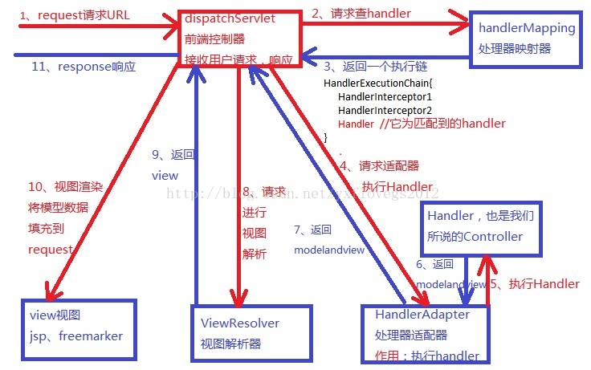
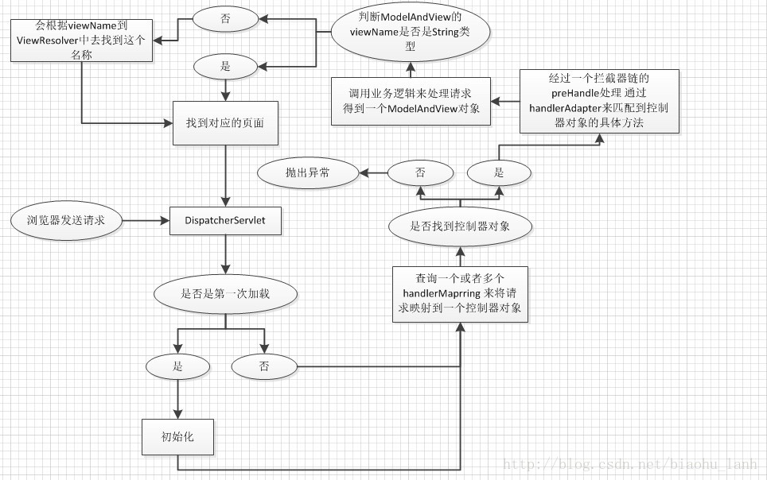
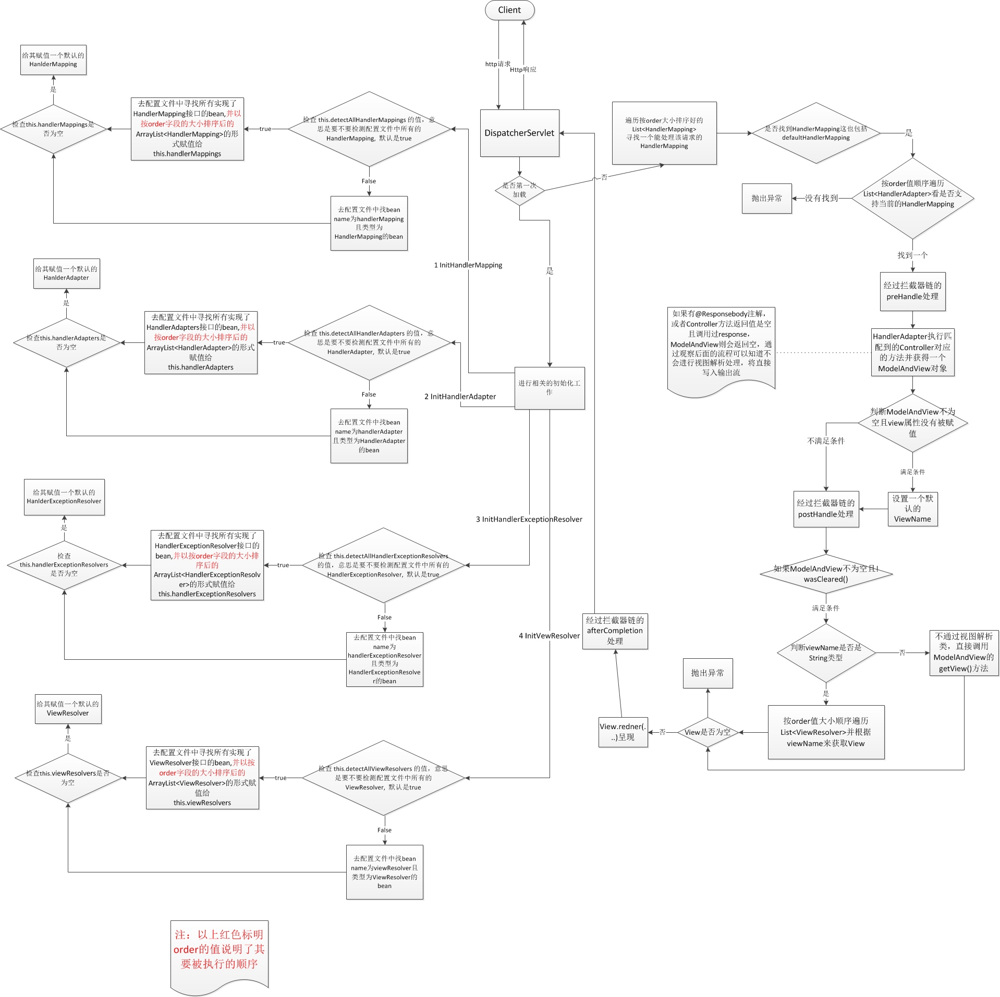

SpringMVC生命周期
图例展示SpringMVC的生命周期，请求过程
介绍DispatcherServlet、HandlerMapping、HandlerAdapter、HandlerExceptionResolver、ViewResolver、View、ModelAndView的作用转自Spring 3.x MVC 入门1 -- 图解MVC整体流程
转自Spring mvc 的生命周期
转自springmvc 生命周期
生命周期
(下面介绍的HandlerMapping,HandlerAdapter,HandlerExceptionResovler,ViewResolver都有个order属性，
因为这些接口每一个都可以注册多个实现，order代表他们的执行顺序，order越小的越先执行，一般先执行的匹配到了后面的就不会执行了)
DispatcherServlet
整个Spring MVC的前端控制器，由它来接管来自客户端的请求
HandlerMapping
DispatcherServlet会通过它来处理客户端请求到各个(Controller)处理器的映射
HandlerAdapter
HandlerMapping会根据它来调用Controller里需要被执行的方法
HandlerExceptionResolver
spring mvc处理流程中，如果有异常抛出，会交给它来进行异常处理
ViewResolver
HandlerAdapter会把Controller中调用返回值最终包装成ModelAndView,ViewResolver会检查其中的view，如果view是一个字符串，它就负责处理这个字符串并返回一个真正的View，如果view是一个真正的View则不会交给它处理，为什么view即可以是字符串又会是View呢下面会进行解释
View
对应MVC 中的V， 此接口只有一个方法 render,用于视图展现
ModelAndView
对于解决上面介绍ViewResoler或者下面图片的疑惑，这个类中的view这个属性是 Object 类型的，它可以是一个视图名也可以是一个实际的View
图例
图解
图解
图解
